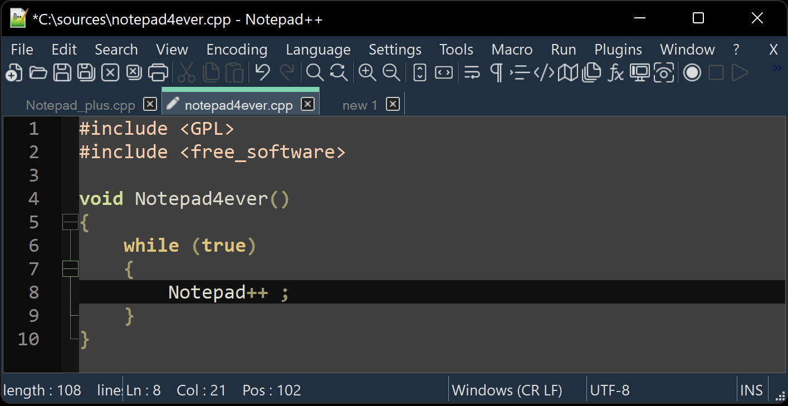

Notepad++
— свободный текстовый редактор с открытым исходным кодом для Windows с подсветкой синтаксиса, разметки, а также языков описания аппаратуры VHDL и Verilog.Базируется на компоненте Scintilla, написан на C++ с использованием STL, а также Windows API, и распространяется под лицензией GNU General Public License. Базовая функциональность программы может быть расширена как за счёт плагинов, так и сторонних модулей, таких как компиляторы и препроцессоры. Поддерживает открытие более 100 форматов
Программа поставляется в двух версиях: UNICODE и ANSI, причём последний вариант доступен только при ручной распаковке архива. Плагины могут быть написаны под определённую версию программы, но чаще плагин работает в обеих версиях, хотя в последнее время акцент делается на UNICODE-версию, как наиболее перспективную.
ля linux программа работает через wine, доступна через набор программ в winetricks, альтернативно подобную функциональность могут дать kate или notepadqq.
|История|
В сентябре 2003 года инженер-программист Дон Хо (Don Ho) создал прототип Notepad++ на базе Scintilla (C++). Он являлся альтернативой редактору (Java), над которым работал Дон Хо в компании JEXT. Однако более производительное решение на C++ в компании принято не было.
25 ноября 2003, после 2-3 месяцев разработки в свободное от работы время, код Notepad++ было выложен на SourceForge. Он был скачан (по состоянию на 23 июля 2015 года) более 29 миллионов раз.
В 2007 году Notepad++ стал доступен не только на Windows, но также появились кросс-платформенные версии для Mac OS X и Linux (Ubuntu).
В 2010 году из-за блокировки правительством США SourceForge.net для стран из «чёрного списка» (Северной Кореи, Кубы, Сирии и т. д.) переместился на собственный сайт http://notepad-plus-plus.org
|Возможности|
- Базовые возможности
Возможности программы заявлены на официальном сайте- При установке дополнительных плагинов
Интерфейс программы
